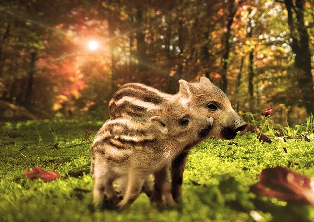

Vildsvin
Vildsvin (Sus scrofa) är ett partåigt hovdjur vars ursprungliga utbredningsområde sträckte sig från västra Europa till Sydostasien. Vildsvinet introducerades sedan i Nordamerika, Sydamerika, Australien och på många öar och har därför idag en nästan världsvid utbredning. Tamsvinet är den domesticerade formen av vildsvin.
Vild eller tam?
Globalt är definitionen av ett vildsvin på många platser flytande då det ursprungligen är samma art som tamsvin, även kallad gris. Tamsvin blir lätt förvildade, och vild och tama svin runt om i världen parar sig med varandra och får avkomma. Indelningen grundar sig därför ofta på va populationen finns och vad man känner till om dess historia.
Exempelvis kallas de vilda svinen på Nya Zeeland för Captain Cookers då de anses härstamma från svin som kapten James Cook tog med sig som gåvor till maorierna på 1770-talet. Ett annat exempel är vildsvin utplanterade i USA i början av 1900-talet som ibland parar sig med tamsvin som rymt från farmer varför det i Nordamerika inte finns någon tydlig gräns mellan vildsvin och tamsvin.
Utseende och anatomi
En könsmogen hane kallas galt (äldre benämning orne) och är mellan 150 och 180 centimeter lång och 70 till 100 centimeter hög. Till längden ska läggas en omkring 25 centimeter lång svans. Den könsmogna honan kallas sugga och är betydligt mindre än hanen.
Galten väger upp till 225 kilogram medan suggan väger mellan 70 och 140 kilogram, det förekommer dock mindre suggor med blott en vikt på 40–50 kilogram. En hona som ännu inte fött några kultingar kallas gylta.
Vildsvinets borst är mörkgrå till brunsvart och båda könen har uppåtböjda betar – galtarnas är avsevärt större än suggans. Vildsvinet har ganska dålig syn men god hörsel och ett extremt bra luktsinne. Svinen kan känna vissa lukter på 8 till 11 kilometers håll.
Det finns rapporter från omvärlden om hybrider mellan vildsvin och tamsvin som vägt långt över 300 kg, och några fåtal exemplar som nedlagts har vägt omkring 400–500 kg. Ett av dem fick på grund av sin storlek namnet Hogzilla.
I genomsnitt överlever 60% av vildsvinen sitt första år, 20% når två år och mindre än 10% blir fyra år. Skansen uppger en medellivslängd på 10 år och Kolmården uppger att de lever i 10–15 år.